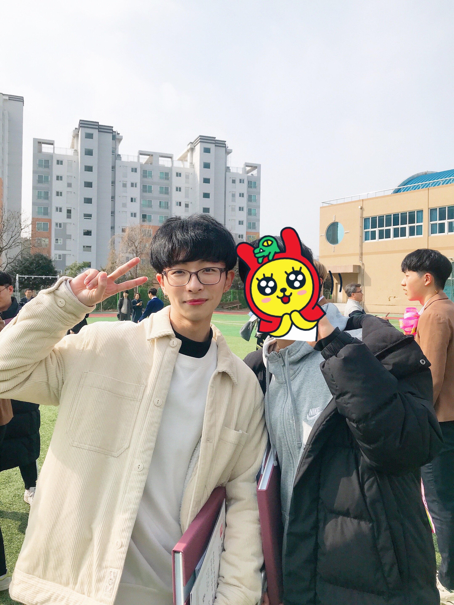
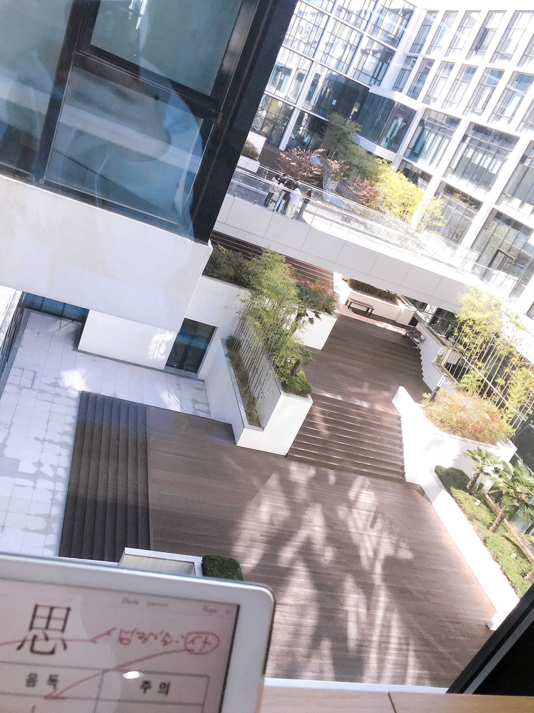
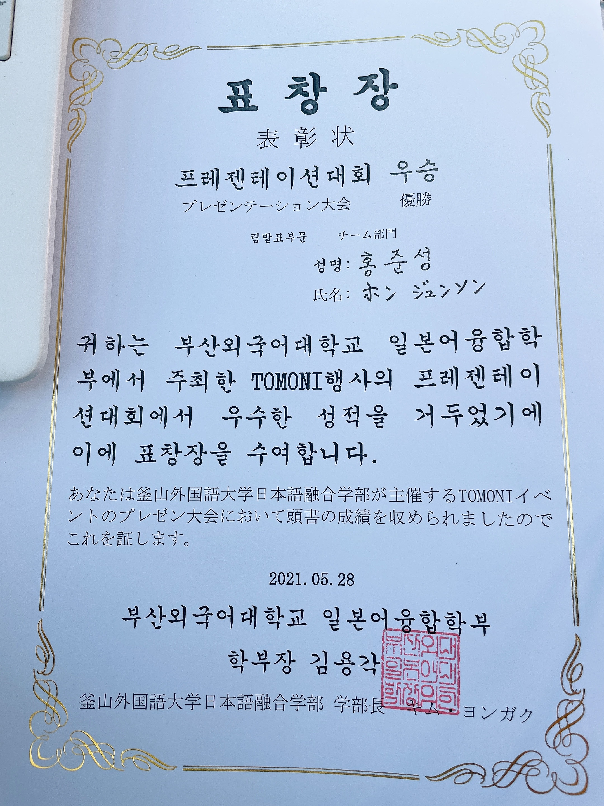
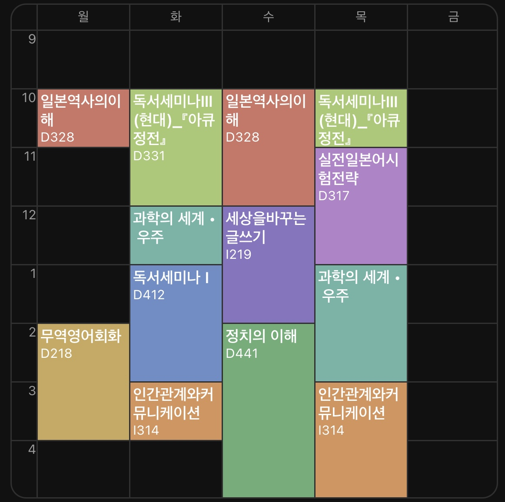
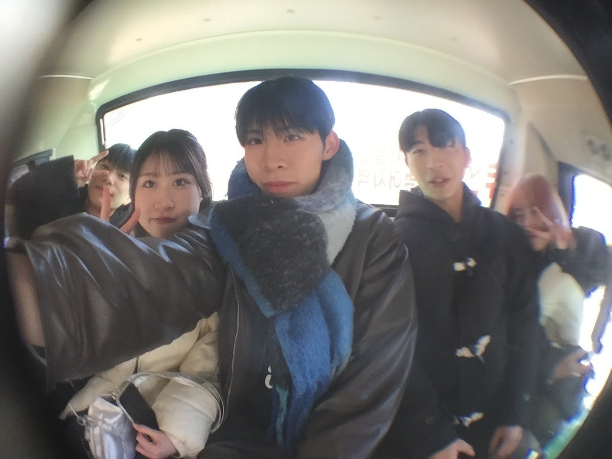
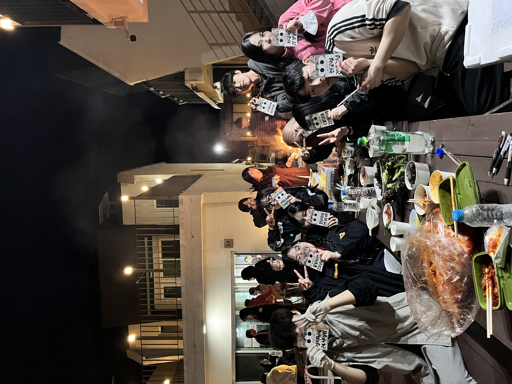

홍준성
당신은 움츠리기보다 활짝 피어나도록 만들어진 존재입니다.
-미국 최고의 진행자 오프라 윈프리-
자기소개
- Full Name:Hong Jun Seong
- Phone:+82 010 9210 6800
- Email:dyddnr4421@naver.com
- Mbti:ENTJ
안녕하십니까!
부산외국어대학교 일본IT전공에 재학 중인 홍준성입니다. 일본어와 IT 두 분야를 융합하여 글로벌 환경에서도 활약할 수 있는 인재로 성장하고자 노력하고 있습니다.
학업뿐만 아니라 다양한 활동에도 적극적으로 참여하며, 사람들과의 소통을 중요하게 생각합니다. 특히 학생회 활동을 통해 협력과 리더십의 가치를 배우며, 책임감 있게 공동의 목표를 이루어가는 경험을 쌓았습니다.
저는 맡은 일에는 끝까지 책임을 다하고, 꾸준한 자기계발을 통해 한 단계씩 성장하는 것을 중요하게 생각합니다. 앞으로도 새로운 도전과 배움을 두려워하지 않고, 더 나은 자신이 되기 위해 최선을 다하겠습니다.
생애
-
학력 및 여러경험
-
고등학교 졸업
부산용인고등학교 - 2017 - 2019인문계 고등학교인 부산용인고등학교에서 문과로 졸업했습니다.
 -
대학교 입학
부산외국어대학교 - 2020 - 현재부산외국어대학교 일본어창의융합학부로 입학했습니다. 고등학교 때부터 일본어를 좋아하고 잘해기 때문에, 당연하게도 일본어를 전공하고자 마음 먹었습니다.
 -
수상
일본어융합학부 토모니 프레젠테이션대회 팀 부문 우승 - 2021.05교수님의 참가 제의를 받고 일본어 말하기 대회에 참가하여 우승을 하였습니다.
 -
군입대
대한민국 육군 수색중대 병장 만기 전역 - 2022.08 - 2024.02 -
복학
복학 - 2024군대 전역후 반년 뒤 복학하였습니다.
 -
통역 스태프
한국어단기연수 통역 스태프 - 2025.02 - 현재부산외국어대학교 한국어교육원 및 국제교류처에서 실시한 연수에서 일본어 통역 스태프로써 방학마다 일 하고있습니다.
 -
학부 학생회
제44대 요로코비 일본어융합학부 학생회 - 2025.03 - 현재지인들의 학생회 권유 및 스스로 나서는 걸 좋아한다고 생각하여 학생회에 참가하기로 하였습니다.
 -
단과대학 학생회
제36대 스파크 아시아대학 학생회 - 2026.01(예정)~단과대학 학생회 권유가 들어왔고, 조금 더 큰 영역으로 나아가서 여러 활동을 해보고싶다는 생각이 들어 참가하기로 했습니다.

장점
소통력95%
책임감90%
적극성95%
계획성70%
실행력80%
리더십75%
봉사정신65%
향상심75%
소통력95%
책임감90%
적극성95%
계획성70%
실행력80%
리더십75%
봉사정신65%
향상심75%
그래프 비율은 '홍준성 타인평가' 설문지에 지인들이 투표해준 투표수로 합산
다양한 활동들
대학생활 동안 참여한 교내 활동을 소개합니다.